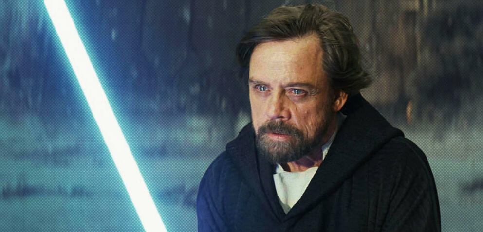

Merhaba, ben İlke Eren. 16 yaşındayım, İstanbul'da oturuyorum ve Amasya'lıyım. Boş zamanlarımda oyun oynamayı, kod yazmayı veya anime izlemeyi severim.
Diziler
Filmler
Animeler
Kitaplar
Yıldız Savaşları, George Lucas tarafından yaratılmış, öncelikle filmleriyle tanınmış, sonraki yıllarda çizgiroman, bilgisayar ve konsol oyunları, televizyon yapımları vb. dallarda ününü arttırmış kurgusal bir evren ve markadır. Serinin ilk filmi, 25 Mayıs 1977'de 20th Century Fox tarafından Star Wars (Yıldız Savaşları) ismiyle yayınlanmış ve dünya çapında bir popüler kültür fenomeni olmuştur. Üçer yıl arayla iki devam filmi yayınlanmıştır. Orijinal üçlemenin son filminin yayınlanmasının 16 yıl ardından, "öncül" üçlemenin ilk filmi yayımlanmış ve yine üçer yıl arayla diğer iki film de yayımlanmıştır. 2015 yılında "ardıl" üçleme başlamış, 2 yıl arayla devam filmleri yayımlanmıştır.
